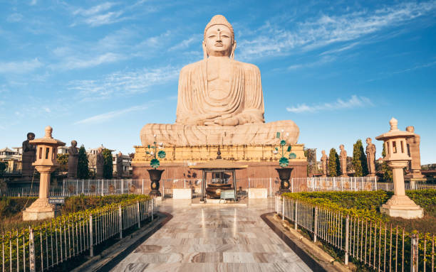
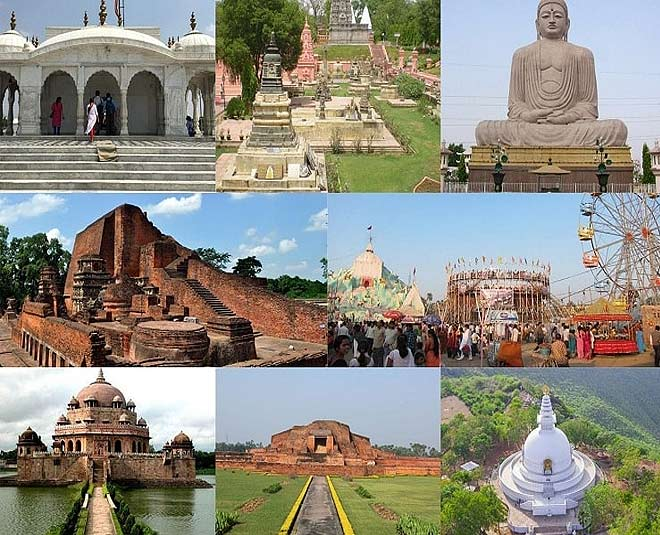
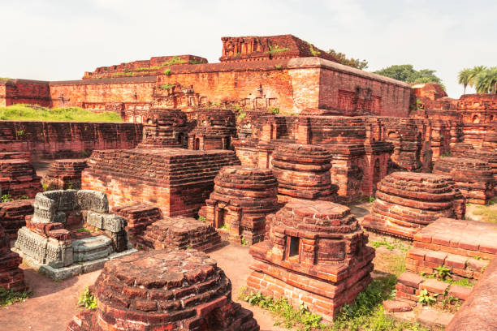
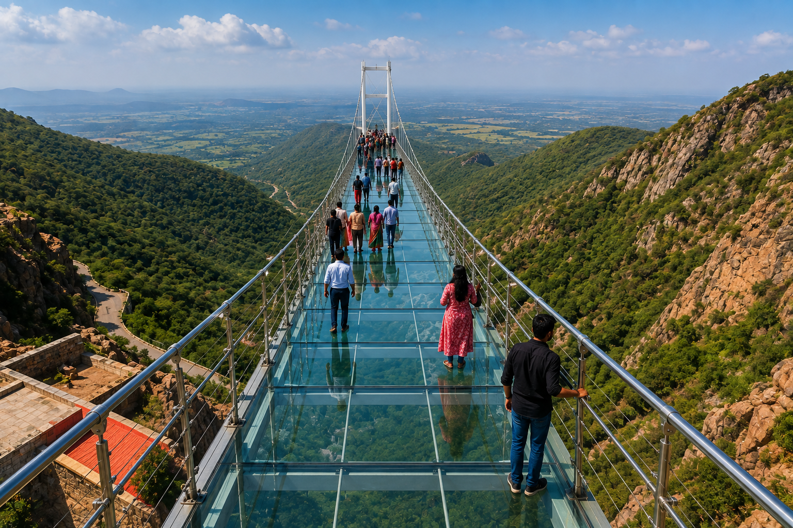
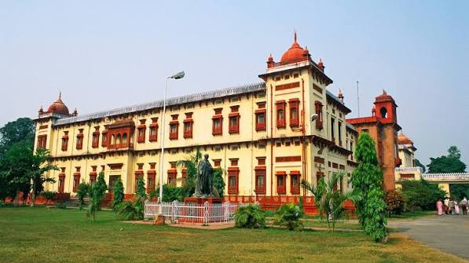
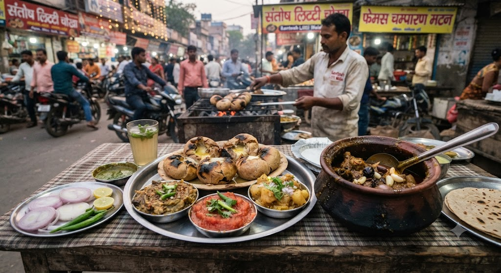

01
Bodh Gaya
UNESCO World Heritage site and the spiritual heart of Buddhism, where Lord Buddha attained supreme enlightenment beneath the sacred Bodhi Tree.

Discover the cradle of ancient Indian empires, the sacred Bodhi tree of Buddha's enlightenment, the architectural legacy of ancient Nalanda University, and timeless Madhubani art.
Explore Bihar ↓Bihar is a pivotal cradle of Indian civilization on the fertile plains of the holy Ganga, where the Mauryan and Gupta empires shaped the subcontinent's golden age of philosophy, democracy, and learning.
From the sacred Mahabodhi Temple in Bodh Gaya and the ancient monastic ruins of Nalanda to the peaceful hills of Rajgir and the historic landmarks of Pataliputra (Patna), Bihar invites every traveler to explore India's spiritual roots.
Sacred pilgrimage shrines, ancient universities, and historic capitals across Bihar.

UNESCO World Heritage site and the spiritual heart of Buddhism, where Lord Buddha attained supreme enlightenment beneath the sacred Bodhi Tree.

The monumental red-brick ruins of the world's most renowned ancient residential monastic university, which attracted scholars across Asia.

An ancient Magadhan capital nestled within five hills, celebrated for the white Vishwa Shanti Stupa, Griddhakuta Peak, and natural sulfur hot springs.

Ancient Pataliputra on the Ganga — home to the massive beehive-shaped Golghar granary, the world-class Bihar Museum, and Takht Sri Patna Sahib.
Bihari cuisine is deeply earthy and nutritious — celebrating roasted gram flour (sattu), pungent cold-pressed mustard oil, earthen-pot slow cooking, and traditional festival sweets.

World-renowned GI-tagged Mithila painting style created with natural pigments, twigs, and fingers, depicting sacred geometry and nature.
An ancient Vedic festival of purity and gratitude dedicated to Lord Surya and Chhathi Maiya, celebrated along sacred riverbanks.
Sacred convergence of world faiths — Buddhism at Bodh Gaya, Jainism at Pawapuri (Lord Mahavira), and Sikhism at Takht Patna Sahib.
Rich regional folk theatre of Bidesiya, Domkach songs, and soulful Maithili and Bhojpuri poetic musical traditions.
Discover all 28 states, local food specialties, and centuries of living traditions.
← Back to All States